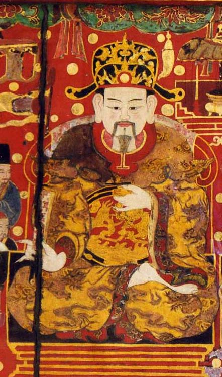

Chương 1 / 5
Khởi Nghĩa Bùng Lên
Năm 542 SCN · Thái Bình, Giao Châu
images/giao-chau-ban-do.jpg
Ảnh gợi ý: Bản đồ Giao Châu thời nhà Lương / cảnh núi rừng Thái Bình
GIAO CHÂU — 542 SCN
Đất nước dưới ách đô hộ nhà Lương
1
542
Khởi nghĩa
2
542
Giải phóng
3
544
Lập nước
4
545
Kháng chiến
5
548
Di sản
Khởi Nghĩa
5%
📚 Bối cảnh
Từ năm 43 SCN, Giao Châu bị nhà Hán rồi nhà Tùy, nhà Lương đô hộ liên tục. Quan lại phương Bắc vơ vét thuế khóa, đàn áp người Việt tàn bạo. Đặc biệt dưới thời thái thú Tiêu Tư — tham nhũng, tàn ác bậc nhất.
Ngươi là Lý Bí — tên đầy đủ là Lý Bôn, xuất thân từ dòng dõi quý tộc đất Thái Bình. Từng làm quan cho nhà Lương, ngươi chứng kiến tận mắt cảnh trăm họ lầm than dưới tay thái thú Tiêu Tư. Sau nhiều năm nuôi chí, thời cơ đã đến.
Lý Bí — lời hịch khởi nghĩa
"Người Giao Châu chúng ta có tổ tiên, có văn hóa, có bản sắc riêng. Ta không thể nhìn người anh em mình bị đối xử như nô lệ. Ai theo ta, hãy cùng ta đánh đuổi quân xâm lược!"
🎓 Kiến thức cơ bản +8 điểm
Lý Bí khởi nghĩa chống lại triều đại nào của Trung Hoa?
🎓 Kiến thức +8 điểm
Thái thú tàn ác bị Lý Bí đánh đuổi là ai?
Mùa xuân năm 542, ngươi tập hợp hào kiệt bốn phương, bắt đầu dấy binh. Câu hỏi lớn đặt ra: chiến lược khởi nghĩa là gì?
⚔️ Thách thức · Sắp xếp chiến lược
Đặt đúng trình tự khởi nghĩa!
Kéo và thả để sắp xếp các bước theo thứ tự hợp lý nhất mà Lý Bí đã thực hiện. Cần đúng ít nhất 3/4 bước để mở khóa chương tiếp theo.
⠿Tập hợp hào kiệt — Triệu Túc, Triệu Quang Phục, Lý Phục Man
⠿Nhận rõ tội ác của thái thú Tiêu Tư, nuôi chí lớn
⠿Tấn công châu lỵ, đánh đuổi Tiêu Tư chạy về Bắc
⠿Bỏ quan về quê, bí mật xây dựng lực lượng
⚡ Bước đầu — lấy sức mạnh từ đâu?
⭐ Lựa chọn sáng suốt!
images/ly-bi-tap-quan.jpg
Ảnh: Lý Bí tập hợp binh sĩ / tranh vẽ lịch sử khởi nghĩa
LIÊN MINH BỐN PHƯƠNG
Sức mạnh đoàn kết dân tộc Lạc Việt
Xuất sắc! Lý Bí liên kết với các hào trưởng như Triệu Túc (cha của Triệu Quang Phục), Lý Phục Man — thủ lĩnh người Tày. Sức mạnh liên minh dân tộc vượt hơn bất cứ chiến lược đơn lẻ nào.
📖 Lực lượng khởi nghĩa Lý Bí
Lý Bí xây dựng liên minh đa dân tộc: người Kinh, người Tày, người Mường... Điều này tạo nên sức mạnh đặc biệt: một cuộc khởi nghĩa của toàn dân Giao Châu, không phải chỉ một tộc người.
👥 Liên minh đa dân tộc
⚔️ Triệu Túc — Tướng giỏi
🏹 Lý Phục Man — Thủ lĩnh Tày
⚡ Tiếp tục...
📍 Suy nghĩ lại...
Lý Bí hiểu: thời cơ không chờ người. Lương thực có thể tích lũy dần, nhưng sức mạnh con người và tinh thần khởi nghĩa mới là vũ khí thật sự. Ngay lúc này, nhân dân đang sôi sục — hãy hành động!
⚡ Hành động ngay...
📍 Nguy hiểm!
Lâm Ấp là vương quốc với tham vọng riêng. Dựa vào họ có thể mang lại viện binh ngắn hạn nhưng đổi lại lãnh thổ và chủ quyền. Lý Bí chọn tự lực cánh sinh — liên kết nhân dân trong nước trước tiên.
⚡ Tự lực cánh sinh...
Chương 2 / 5
Gươm Vàng Giải Phóng
Năm 542 SCN · Từ Thái Bình đến Tống Bình

GIẢI PHÓNG TỐNG BÌNH
542 SCN · Tiêu Tư tháo chạy về phương Bắc
1
542
Khởi nghĩa
2
542
Giải phóng
3
544
Lập nước
4
545
Kháng chiến
5
548
Di sản
⚡ Tốc độ
Chỉ trong vài tháng, quân Lý Bí quét sạch quan quân nhà Lương khắp Giao Châu. Tiêu Tư hoảng sợ bỏ thành chạy thẳng về phương Bắc — không dám chống cự.
Gươm dậy sáng, cờ bay phần phật! Chỉ trong mùa xuân năm 542, quân Lý Bí đã giải phóng gần như toàn bộ Giao Châu. Tiêu Tư bỏ thành Tống Bình (Hà Nội ngày nay) tháo chạy. Nhà Lương ba lần cử quân sang tái chiếm đều bị đánh lui cả.
📝 Thách thức · Điền từ còn thiếu
Điền tên nhân vật lịch sử!
Điền tên đúng vào các ô trống. Mỗi ô đúng +5 điểm.
🎓 Kiến thức +10 điểm
Sau khi giải phóng Giao Châu, nhà Lương phản ứng như thế nào?
Cổng Chương 3 — Lập Nước Vạn Xuân
Để chứng kiến khoảnh khắc lịch sử Lý Bí lên ngôi Hoàng Đế, bạn cần tích lũy đủ 30 điểm và hoàn thành ít nhất 2 câu hỏi đúng trong chương này.
🔒 Cần: 30 điểm | Bạn đang có: 0 điểm
Chương 3 / 5
Nước Vạn Xuân Ra Đời
Năm 544 SCN · Lễ Đăng Quang Lịch Sử

LÝ NAM ĐẾ — 544 SCN
Hoàng đế đầu tiên tự xưng của người Việt
1
542
Khởi nghĩa
2
542
Giải phóng
3
544
Lập nước
4
545
Kháng chiến
5
548
Di sản
🏛 Tuyên ngôn
Năm 544, Lý Bí tự xưng là Nam Việt Đế (sau gọi là Lý Nam Đế). Đây là lần đầu tiên trong lịch sử, một người Việt tự xưng đế — ngang hàng với hoàng đế Trung Hoa, khẳng định chủ quyền độc lập hoàn toàn.
Mùa xuân năm 544, trong tiếng trống đồng vang vọng, trước hàng triệu dân Giao Châu tụ hội, ngươi — Lý Bí — tuyên bố lập nước Vạn Xuân. Cái tên mang ý nghĩa: đất nước trường tồn muôn đời như mùa xuân bất tận. Ngươi đặt kinh đô tại Tống Bình (Hà Nội), dựng chùa Khai Quốc (nay là chùa Trấn Quốc).
Lý Bí — tuyên ngôn lập nước Vạn Xuân
"Nước ta là nước của người Việt, có từ ngàn đời. Ta lập nước Vạn Xuân — mong đất nước ta tồn tại muôn năm như mùa xuân bất diệt. Từ nay, ta tự xưng là Nam Việt Đế — không thần phục bất cứ triều đình ngoại bang nào!"
🎓 Kiến thức quan trọng +12 điểm
Ý nghĩa tên nước "Vạn Xuân" là gì?
🔗 Thách thức · Nối cột lịch sử
Nối đúng sự kiện với ý nghĩa!
Bấm một ô bên trái rồi bấm ô tương ứng bên phải. Nối đúng hết để nhận điểm thưởng +20 điểm!
Tự xưng "Nam Việt Đế"
Đặt tên nước "Vạn Xuân"
Xây chùa Khai Quốc
Đặt kinh đô Tống Bình
Nay là chùa Trấn Quốc, Hà Nội
Khẳng định ngang hàng đế vị với TQ
Nay là Hà Nội — trung tâm đất nước
Mong đất nước trường tồn muôn năm
🎓 Kiến thức +10 điểm
Lý Bí xây chùa nào trong thời kỳ trị vì — ngôi chùa đó ngày nay còn tồn tại?
"Lần đầu tiên trong lịch sử, một người Việt xưng Đế — không phải 'vương' hay 'vua' theo nghĩa phụ thuộc — mà là Hoàng Đế ngang hàng với Thiên tử Trung Hoa. Đây là tuyên ngôn độc lập đầu tiên của dân tộc Việt!"
— Sử gia hiện đại nhận định
— Sử gia hiện đại nhận định
⚡ Với tư cách Hoàng Đế — ưu tiên nào quan trọng nhất?
⭐ Tầm nhìn trị quốc!
Đúng! Lý Bí xây dựng bộ máy triều đình, phong tướng Triệu Túc làm Thái Phó, Tinh Thiều làm Thượng Thư, Phạm Tu làm đại tướng quân. Nước Vạn Xuân có một chính quyền độc lập thực sự!
📖 Triều đình Vạn XuânLý Bí tổ chức triều đình theo mô hình độc lập, không phải "chư hầu" của ai. Tinh Thiều là nhà trí thức từng bị nhà Lương khinh thường, nay được trọng dụng. 🏛 Triệu Túc — Thái Phó⚔️ Phạm Tu — Đại tướng📚 Tinh Thiều — Thượng Thư
⚡ Tiếp tục...
📍 Cần cân bằng hơn
Quân sự quan trọng, nhưng một nhà nước vững mạnh cần cả văn hóa, giáo dục và quản trị. Lý Bí đã làm cả hai — nhưng ưu tiên xây dựng nền tảng quốc gia trước.
⚡ Xây nền móng vững chắc...
📍 Nhà Lương sẽ không tha
Nhà Lương coi Giao Châu là lãnh thổ — họ sẽ không bao giờ công nhận độc lập thực sự. Ngoại giao với kẻ không coi ta là ngang hàng chỉ là tự hạ thấp mình.
⚡ Tự cường là con đường duy nhất...
Chương 4 / 5
Máu Đổ Trên Hồ Điển Triệt
Năm 545–548 SCN · Cuộc kháng chiến quyết liệt
images/ho-dien-triet.jpg
Ảnh: Hồ Điển Triệt / đầm lầy vùng Vĩnh Phúc / cảnh sông nước chiến trận
HỒ ĐIỂN TRIỆT
Nơi diễn ra trận thủy chiến sinh tử · 545–546 SCN
1
542
Khởi nghĩa
2
542
Giải phóng
3
544
Lập nước
4
545
Kháng chiến
5
548
Di sản
⚔️ Thế lực mạnh
Năm 545, nhà Lương cử danh tướng Trần Bá Tiên — một trong những tướng giỏi nhất lịch sử Trung Hoa — dẫn đại quân sang. Đây là thử thách sinh tử của nước Vạn Xuân.
Năm 545, Trần Bá Tiên — đại tướng thiên tài của nhà Lương — dẫn đại quân tràn xuống. Tướng Phạm Tu hy sinh trong trận đầu. Thất thế, ngươi rút lui về đóng quân trên hồ Điển Triệt (nay là vùng Vĩnh Phúc) — trận thủy chiến bi hùng nhất lịch sử thời kỳ này bắt đầu.
🎓 Kiến thức +10 điểm
Vị đại tướng nào của nhà Lương được cử sang đánh Lý Bí năm 545?
Quân Lương tấn công dữ dội vào ban đêm khi lính của ngươi đang ngủ. Thuyền chiến bốc lửa. Quân ta thương vong nặng. Ngươi buộc phải rút quân vào rừng sâu Khuất Lão (Phú Thọ).
Triệu Quang Phục — bày tỏ trước quân lệnh
"Bệ hạ — lực ta yếu hơn địch. Nhưng địa lợi về ta. Cho phép thần vào đầm Dạ Trạch cầm cự — từng bước tiêu hao sinh lực địch. Một ngày kia ta sẽ phản công!"
🔥 Thách thức cao · Chuỗi câu hỏi chiến thuật
Vượt qua 3/4 câu hỏi chiến thuật để tiếp tục!
Đây là bài kiểm tra khó — cần đúng ít nhất 3 trong 4 câu để mở cổng chương 5. Mỗi câu đúng +8 điểm.
1. Tại sao Lý Bí chọn hồ Điển Triệt làm căn cứ phòng thủ?
2. Ai là người được Lý Bí tin tưởng giao trọng trách tiếp tục kháng chiến?
3. Căn cứ đầm Dạ Trạch nằm ở tỉnh/khu vực nào ngày nay?
4. Phạm Tu — đại tướng của Lý Bí — được thờ ở đâu ngày nay?
⚔️ Kháng chiến kiên cường
images/trieu-quang-phuc.jpg
Ảnh: Tranh Triệu Quang Phục / đầm Dạ Trạch / cảnh chiến tranh du kích sông nước
TRIỆU QUANG PHỤC
Dạ Trạch Vương — Anh hùng đầm lầy
Kháng chiến trong đầm lầy. Lý Bí trao binh quyền cho Triệu Quang Phục, lui về Khuất Lão. Triệu Quang Phục dùng chiến thuật du kích từ đầm Dạ Trạch — mỗi đêm đột kích quân Lương, rồi tan vào bóng tối đầm lầy. Quân Lương không tài nào tiêu diệt được.
📖 Triệu Quang Phục — Dạ Trạch VươngTriệu Quang Phục giữ vững đầm Dạ Trạch suốt nhiều năm, tiêu hao sinh lực quân Lương. Khi nhà Lương suy yếu vì nội chiến, ông phản công thành công năm 550, giải phóng Giao Châu lần hai!
🎓 Kiến thức +12 điểm
Lý Bí mất năm nào và ở đâu?
⚡ Tiếp tục...
Chương 5 / 5
Di Sản Vạn Xuân
Ý Nghĩa Ngàn Năm Của Lý Nam Đế
images/chua-tran-quoc.jpg
Ảnh: Chùa Trấn Quốc (nguyên là chùa Khai Quốc Lý Bí xây) / đền thờ Lý Nam Đế
CHÙA TRẤN QUỐC — HÀ NỘI
Nguyên là chùa Khai Quốc — Lý Bí xây năm 544
1
542
Khởi nghĩa
2
542
Giải phóng
3
544
Lập nước
4
545
Kháng chiến
5
548
Di sản
🌟 Di sản
Nước Vạn Xuân tồn tại ngắn (544–602 SCN) nhưng để lại dấu ấn vĩnh cửu: tư tưởng độc lập — ngang hàng với Trung Hoa — trở thành nền tảng ý thức dân tộc Việt ngàn năm sau.
Năm 548, Lý Bí lâm bệnh và mất tại vùng Khuất Lão. Nhưng di sản của ông không chết theo. Triệu Quang Phục tiếp tục, giải phóng đất nước năm 550. Nước Vạn Xuân tồn tại thêm nửa thế kỷ cho đến năm 602. Cái tên Lý Nam Đế — hoàng đế miền Nam — là tuyên ngôn bất tử: chúng ta là một đế quốc độc lập, không phụ thuộc ai!
📖 Tầm vóc lịch sử Lý Bí
1. Người Việt đầu tiên tự xưng Đế — ngang hàng với Thiên tử Trung Hoa
2. Lập ra nhà nước độc lập đầu tiên sau thời kỳ Bắc thuộc dài nhất (43–542 SCN = 500 năm!)
3. Xây chùa Khai Quốc (nay là chùa Trấn Quốc — ngôi chùa lâu đời nhất Hà Nội)
4. Đặt tên nước Vạn Xuân — triết lý bền vững muôn đời
2. Lập ra nhà nước độc lập đầu tiên sau thời kỳ Bắc thuộc dài nhất (43–542 SCN = 500 năm!)
3. Xây chùa Khai Quốc (nay là chùa Trấn Quốc — ngôi chùa lâu đời nhất Hà Nội)
4. Đặt tên nước Vạn Xuân — triết lý bền vững muôn đời
👑 Lý Nam Đế
🏛 Nước Vạn Xuân
⏱ 500 năm Bắc thuộc kết thúc
🕌 Chùa Trấn Quốc 1500 năm
🏆 Thách thức cuối · Thử thách tổng hợp
Kiểm tra toàn bộ hành trình — Cần đúng 4/5 câu!
Đây là thách thức khó nhất. Đúng 4/5 → nhận danh hiệu cao nhất. Mỗi câu đúng +15 điểm.
1. Nước Vạn Xuân tồn tại từ năm nào đến năm nào?
2. Lý Bí đặt kinh đô ở đâu?
3. Ai là người kế tục Lý Bí, tiếp tục kháng chiến và giải phóng đất nước năm 550?
4. Bài học lớn nhất từ Lý Bí là gì?
5. Điểm khác biệt lớn nhất giữa Lý Bí và các cuộc khởi nghĩa trước đó (như Hai Bà Trưng) là gì?
"Lý Nam Đế — người đầu tiên dám nói: Ta là Hoàng Đế, không phải chư hầu. Ý chí đó không mất đi khi ông qua đời. Nó sống trong Triệu Quang Phục, trong Ngô Quyền, trong Đinh Bộ Lĩnh, trong Lý Công Uẩn... Cho đến ngày nay."
— Tinh thần Vạn Xuân trường tồn
— Tinh thần Vạn Xuân trường tồn
👑
Hành Trình Hoàn Thành!
0 điểm
—
...
📚 Ba bài học từ Lý Nam Đế
1. Tự tôn dân tộc là sức mạnh: Khi Lý Bí xưng "Nam Việt Đế", ông tuyên bố với thế giới rằng người Việt là một dân tộc ngang hàng, không thấp kém hơn ai. Tư tưởng đó trở thành nền tảng bất diệt.
2. Đoàn kết đa dân tộc: Liên minh Kinh–Tày–Mường trong cuộc khởi nghĩa Lý Bí chứng minh sức mạnh của đoàn kết vượt ranh giới tộc người.
3. Di sản vô hình quý hơn giang sơn: Nước Vạn Xuân mất sau 58 năm — nhưng cái tên, cái tư tưởng "Vạn Xuân" sống mãi, truyền cảm hứng cho mọi cuộc kháng chiến sau này.
2. Đoàn kết đa dân tộc: Liên minh Kinh–Tày–Mường trong cuộc khởi nghĩa Lý Bí chứng minh sức mạnh của đoàn kết vượt ranh giới tộc người.
3. Di sản vô hình quý hơn giang sơn: Nước Vạn Xuân mất sau 58 năm — nhưng cái tên, cái tư tưởng "Vạn Xuân" sống mãi, truyền cảm hứng cho mọi cuộc kháng chiến sau này.